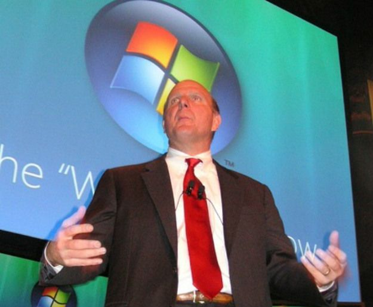
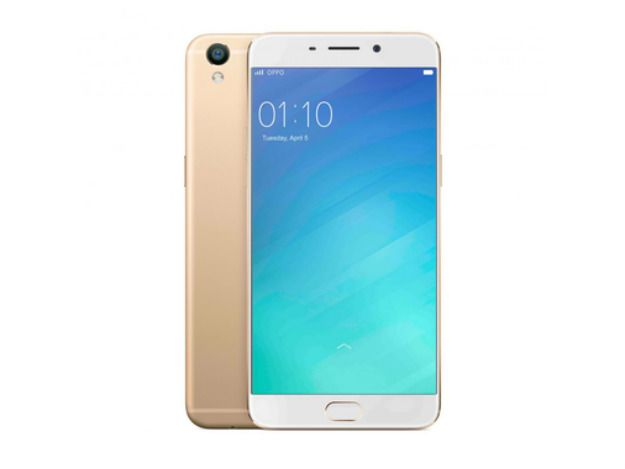
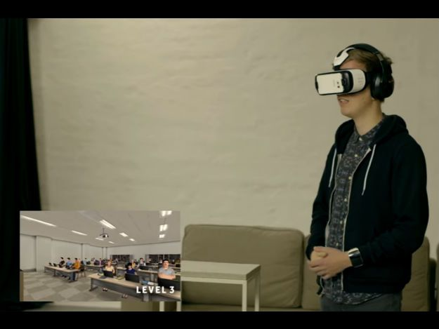

Microsoft encerra suporte ao Windows Vista em abril
A Microsoft vai encerrar todo o suporte para o Windows Vista em dois meses, acabando com a utilidade do sistema cheio de problemas quando os últimos patches forem liberados em 11 de abril. E o fim oficial do sistema não será muito sentido. Isso porque, segundo a consultoria Net Applications, o Vista estava presente em menos de 1% de todos os computadores com Windows no mês passado. Mesmo assim, mesmo esse porcentagem pequena se traduz em cerca de 14 milhões de PCs usando o sistema, se levarmos em conta a afirmação da Microsoft de que 1,5 bilhão de aparelhos rodam Windows. De qualquer forma, o Vista nunca fui um sucesso de verdade para a Microsoft, como aconteceu com o antecessor XP e com o sucessor Windows 7. Mesmo no auge do Vista, cerca de três após seu lançamento, o sistema estava em apenas 20% de todos os PCs com Windows. Mas a partir de outubro de 2009, não por acaso o mês de lançamento do Windows 7, a participação do Vista só encolheu - em um ano, já estava abaixo de 15%, por exemplo. Os (diversos) problemas do Vista já foram bastante discutidos, tanto que, em 2013, o ex-CEO da Microsoft, Steve Ballmer, disse que o sistema era a coisa de “que mais se arrependia” do seu tempo na empresa. Após o fim do suporte para o Vista, a próxima edição a ser aposentada oficialmente é o Windows 7, que irá receber o seu último update de segurança em 14 de janeiro de 2020.
Smartphone que mais cresce na China, Oppo deixa gigantes para trás
A demanda por smartphones na China está explodindo e, em consequência, o volume total de vendas de aparelhos no país está batendo recordes, segundo a empresa de pesquisas Counterpoint. No último trimestre de 2016, o mercado cresceu 12%, comparado ao ano anterior, e 9% sobre o terceiro trimestre, revelando um novo campeão de vendas, a chinesa Oppo, que passou a perna em Apple, Xiaomi, Lenovo e até na Huawei. Altamente competitivo, o mercado chinês trouxe surpresas para as marcas em 2016. Mais da metade das vendas de 2016 (58%) ficaram nas mãos de cinco empresas - Oppo, Huawei, vivo, Meizu e Gionee - sendo que Oppo e Vivo registraram os crescimentos mais significativos: 109% e 78%, respectivamente. No último trimestre do ano, o primeiro lugar de mercado foi da Oppo (18,3%), seguida de Huawei (17,1%), Vivo (14,5% ), Apple (12,2%), Xiaomi (9,9%) e Samsung (5,5%). No ano de 2016, a ordem muda, ficando Huawei em primeiro (16,4%), seguida de Oppo (15,5%), Vivo (13,9% ), Xiaomi (10,9%), Apple (10,4%), e Samsung (6,9%). O diretor de pesquisas da Counterpoint, James Yan, diz que "apenas cinco marcas (Oppo, Huawei, vivo, Meizu e Gionee) registraram crescimento saudável no ano de 2016. A demanda pelo resto das marcas caiu, especialmente para as estrelas de 2015, Xiaomi e Apple, que tiveram demanda muito abaixo do esperado para seus smartphones durante o ano".
Samsung usa realidade virtual para te ajudar a falar em público
A Samsung lançou um aplicativo que recorre à realidade virtual para poder ajudar usuários tímidos a superarem certas fobias, como falar em público, algo que pode vir a atrapalhar entrevistas de emprego. Parte da campanha global Launching People, o programa #BeFearless quer usar tecnologia como acelerador do potencial humano. O app conta com o módulo “Medo de Falar em Público”, disponível em três versões – uma delas conta com exercícios desenvolvidos para o universo profissional, que inclui entrevistas de emprego. Por meio do headset de realidade virtual da companhia, o Gear VR, o programa de treinamento visa diminuir a ansiedade enquanto a pessoa estiver interagindo com uma audiência mais ampla. Ao usar o aplicativo, a linguagem corporal e a autoconfiança são alguns dos focos trabalhados. O usuário pode responder a perguntas e receber feedback do entrevistador com base no tom de voz e no batimento cardíaco. Se ele estiver distraído ou responder negativamente, quer dizer que a pessoa está com alto nível de tensão, logo precisará treinar mais e repetir a fase.